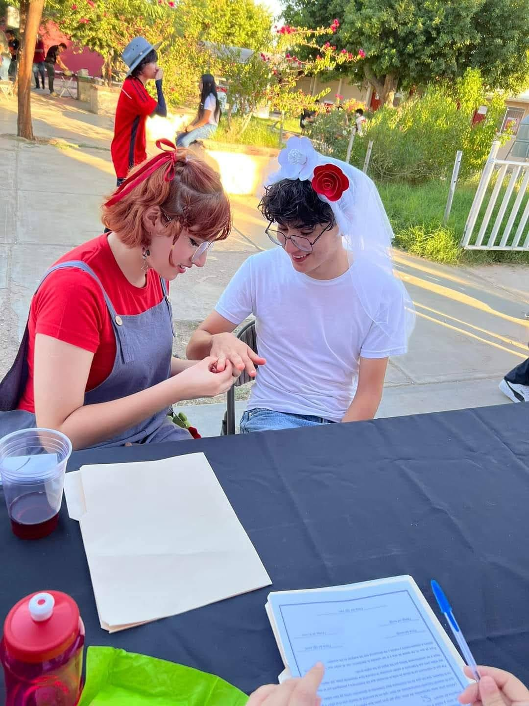

Bienvenidos a nuestra página de amor: Cruz y Fini. Aquí es donde compartimos nuestros recuerdos más especiales como pareja, esos momentos que han marcado nuestra historia y que siguen llenando de alegría nuestro presente.
Nuestra relación comenzó el 11 de noviembre de 2023, una fecha que nunca olvidaré, porque fue el día en que encontré a la persona que cambiaría mi vida para siempre. Han pasado 11 meses desde entonces, y aunque parezca increíble, estamos a punto de cumplir un año juntos. Este tiempo ha estado lleno de risas, aprendizajes, y sobre todo, mucho amor.
Desde aquel primer día en que decidimos compartir nuestras vidas, he descubierto en ti, Fini, mucho más que una pareja. Eres mi mejor amiga, mi confidente, mi apoyo incondicional. Contigo, he encontrado a alguien con quien puedo ser yo mismo, sin máscaras ni barreras, y eso es algo que valoro más de lo que puedo expresar con palabras.
Cada momento a tu lado ha sido un regalo. Juntos hemos creado recuerdos inolvidables, desde los días tranquilos disfrutando de nuestra compañía, hasta las aventuras que nos hacen reír y sentirnos más vivos. Me encanta cómo siempre encontramos una manera de hacer que cada instante cuente, de apoyarnos mutuamente en los días difíciles, y de celebrar las victorias, por pequeñas que sean.
A lo largo de estos meses, me has enseñado lo que significa realmente amar a alguien. Me has mostrado la belleza de la paciencia, la importancia de la comunicación y lo maravilloso que es tener a alguien en quien confiar plenamente. Estoy agradecido por cada sonrisa que me has regalado, por cada abrazo que me ha hecho sentir que todo está bien, y por cada conversación que ha fortalecido nuestra relación.
Hoy, mirando hacia atrás, me doy cuenta de lo afortunado que soy por tenerte en mi vida. Y aunque hemos vivido tanto en estos 11 meses, sé que lo mejor aún está por venir. Nuestro futuro juntos está lleno de sueños, de nuevos recuerdos por crear y de amor por compartir. No puedo esperar para seguir escribiendo nuestra historia, mano a mano, día a día.
Gracias por ser esa persona increíble que ilumina mis días. Gracias por ser mi pareja, mi compañera y la razón por la que cada mañana me despierto con una sonrisa. Te amo, Fini, y siempre lo haré.
Esta página está hecha para la mejor novia del mundo. Te amo, mi fini hermosa.
Quiero que sepas cuánto significas para mí y lo agradecido que estoy por tenerte en mi vida. Cada momento contigo es especial, y espero que siempre podamos crear recuerdos juntos.
Con todo mi amor,.